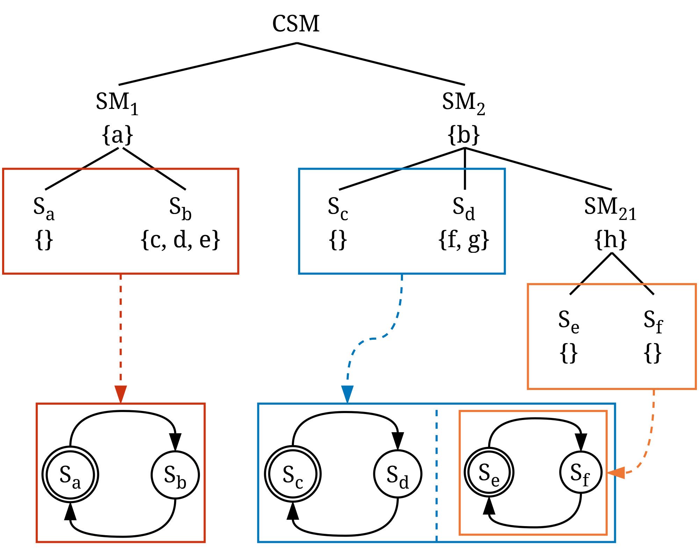

Figure 1 (repeated): An example of a CSM description. Components can have data represented by {...}.
The scoping of local data within a collaborative state machine is defined with respect to the dynamic extent of the components of $C$ with shared memory.
We denote the dynamic extent of a component $c$ as $c^+$ to include the component itself and any ancestor of $c$. When operating in shared memory mode, $C$ is guaranteed to execute on a single resource with shared memory such that any component $c \in C$ can access local data according to $c^+$ and $c_0^+$ where $c_0$, the root level, denotes the collaborative state machine.
The root of a collaborative state machine in distributed memory mode has no shared memory and thus cannot declare or access local data. A state machine $s$ with its nested components $s_{c}$ always operates in shared memory even if $s$ is part of $C$ in distributed memory. $s$ has access to local data according to $s^+$. Similarly, each component $s_{c}$ has a dynamic extent denoted by $s_{c^+}$, allowing access to its local data within its specific scope, as illustrated in Figure 1. Restricting the access of data to ancestors facilitates information hiding. For example, a state can access the data of its parent state machine, but a state machine cannot access the data of its states or nested state machines. In Figure 1 state $S_{e}$ has access to variables $h$ and $b$, state $S_a$ can access $a$, and state $S_b$ can access variables $c$, $d$, $e$, and $a$. However, $SM_2$ can only access variable $b$. Siblings do not have access to each other's data. For instance, $S_{d}$ cannot access any data within $SM_{21}$ or $S_{c}$.
When referencing an existing variable within a component $c$, the variable is located by searching within the dynamic extent $c^+$, which encompasses the local data of $c$ and extends to include any ancestor components of $c$. The search proceeds from the local data of $c$ to the local data of its ancestors, and finally to persistent data accessible to the component and its ancestors.
Within CSM, data plays a multifaceted role. Data may be declared lexically or created dynamically, and data can be manipulated through actions. Data may be stored locally within a component or persisted globally. Expressions provide fundamental data transformation operations, such as selecting properties from objects, performing calculations or filtering, and invoking utility functions. The versatility of expressions extends to their usage in diverse scenarios. For example, expressions can facilitate gathering input data for service invocations, express guard conditions, or be instrumental in manipulating data objects directly.